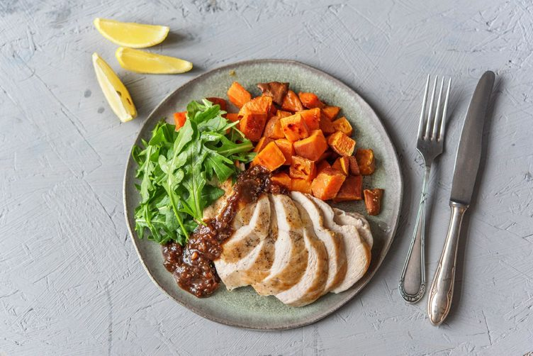
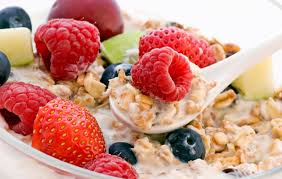
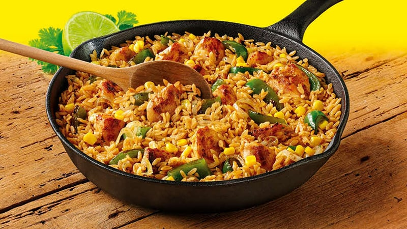

Incorporate at least five servings of fruits and vegetables into your diet per day. These foods, which are low in calories and high in nutrients, help with weight control. Limit consumption of sugary beverages, such as sodas and fruit juices, and choose lean meats like fish and turkey.
A healthy diet is one that helps to maintain or improve overall health. It provides the body with essential nutrition: fluid, adequate essential amino acids from protein, essential fatty acids, vitamins, minerals, and adequate calories. The requirements for a healthy diet can be met from a variety of plant-based and animal-based foods.
Dieting is the practice of eating food in a regulated and supervised fashion to decrease, maintain, or increase body weight. In other words, it is conscious control or restriction of the diet. A restricted diet is often used by those who are overweight or obese, sometimes in combination with physical exercise, to reduce body weight.
Food is any substance consumed to provide nutritional support for an organism. It is usually of plant or animal origin, and contains essential nutrients, such as carbohydrates, fats, proteins, vitamins, or minerals. The substance is ingested by an organism and assimilated by the organism's cells to provide energy, maintain life, or stimulate growth.
Healthy eating is often equated with dieting, but the two are different. A healthy diet includes all the food groups, doesn't feel like deprivation and should be sustainable for life. To improve your diet, replace refined grains with whole grains such as brown rice, oatmeal or whole-grain bread.
Good nutrition is an important part of leading a healthy lifestyle. Combined with physical activity, your diet can help you to reach and maintain a healthy weight, reduce your risk of chronic diseases (like heart disease and cancer), and promote your overall health.